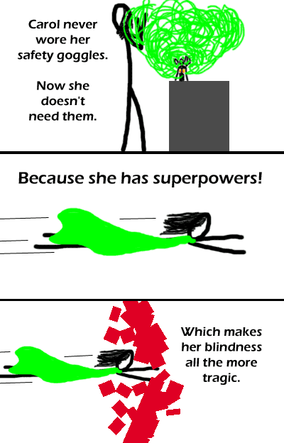

Comic JK 136
When I Feel Like It
⇤
<
?
>
⇥

⇤
<
?
>
⇥
Forum
.
RSS
.
Digg
.
Facebook
.
Reddit
.
Twitter
.
Stumbleupon
Enter your thoughts on number 136 here. Please, no spamming, trolling, or phreaking. I once forgot my safety goggles before visiting your anus and this happened to me. Oh Carol. Hmmm, I feel a concurrent kitchen joke coming on. good but i want a linkable url - just a random guy fullscreengaming.com/jgames/Media/ComicJK/jk.php?comic=136 ta it would be cool if you (creator) made a "jump to comic x" tool for the site <Sure, why not.> ooooh fun. thanks! Oh, you updated what's displayed when you go to the url of a comic that hasn't been made yet! Before, fullscreengaming.com/jgames/Media/ComicJK/jk.php?comic=999 led to a blank page. <Yup--also, entering text will bring you to the first comic. Apparently the PHP < operator regards any string as being less than a number.> That's because the string is being evaluated to 0. If the string was "12 afas" on the other hand, it'd probably evaluate to 12 though. thank you you have revaeled a terrible flaw in php (if i enter yo momma it is asumed to be smaller than any number whereas anyone can confirm that it is larger - just a random guy >This is the only good Ur Mom joke. Epic comic. lol <script language="Javascript"> alert("lulz"); </script> I LOLed. Thank you JK comics. This was funny; although, funny is starting to denote a different meaning than what I grew up knowing it as.